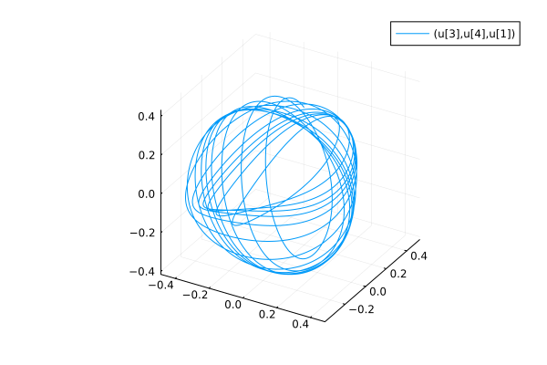
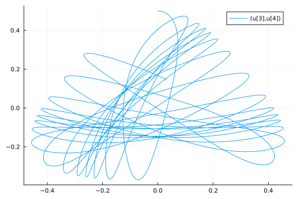

Global Parameter Sensitivity and Optimality with GPU and Distributed Ensembles (B)
Part 1: Implementing the Henon-Heiles System (B)
using DifferentialEquations, Plots, DiffEqPhysics
using OrdinaryDiffEqRKN: DPRKN6, FineRKN4
function henon(dz,z,p,t)
p₁, p₂, q₁, q₂ = z[1], z[2], z[3], z[4]
dp₁ = -q₁*(1 + 2q₂)
dp₂ = -q₂-(q₁^2 - q₂^2)
dq₁ = p₁
dq₂ = p₂
dz .= [dp₁, dp₂, dq₁, dq₂]
return nothing
end
u₀ = [0.1, 0.0, 0.0, 0.5]
prob = ODEProblem(henon, u₀, (0., 1000.))
sol = solve(prob, Vern9(), abstol=1e-14, reltol=1e-14)
plot(sol, idxs=[(3,4,1)], tspan=(0,100))
(Optional) Part 2: Alternative Dynamical Implementations of Henon-Heiles (B)
function henon(ddz,dz,z,p,t)
q₁, q₂ = z[1], z[2]
ddq₁ = -q₁*(1 + 2q₂)
ddq₂ = -q₂-(q₁^2 - q₂^2)
ddz .= [ddq₁, ddq₂]
end
p₀ = u₀[1:2]
q₀ = u₀[3:4]
prob2 = SecondOrderODEProblem(henon, p₀, q₀, (0., 1000.))
sol = solve(prob2, DPRKN6(), abstol=1e-10, reltol=1e-10)
plot(sol, vars=[(3,4)], tspan=(0,100))
H(p, q, params) = 1/2 * (p[1]^2 + p[2]^2) + 1/2 * (q[1]^2 + q[2]^2 + 2q[1]^2 * q[2] - 2/3*q[2]^3)
prob3 = HamiltonianProblem(H, p₀, q₀, (0., 1000.))
sol = solve(prob3, FineRKN4(), abstol=1e-10, reltol=1e-10)
plot(sol, idxs=[(3,4)], tspan=(0,100))Part 3: Parallelized Ensemble Solving
In order to solve with an ensemble we need some initial conditions.
function generate_ics(E,n)
# The hardcoded values bellow can be estimated by looking at the
# figures in the Henon-Heiles 1964 article
qrange = range(-0.4, stop = 1.0, length = n)
prange = range(-0.5, stop = 0.5, length = n)
z0 = Vector{Vector{typeof(E)}}()
for q in qrange
V = H([0,0],[0,q],nothing)
V ≥ E && continue
for p in prange
T = 1/2*p^2
T + V ≥ E && continue
z = [√(2(E-V-T)), p, 0, q]
push!(z0, z)
end
end
return z0
end
z0 = generate_ics(0.125, 10)
function prob_func(prob, context)
remake(prob; u0 = z0[context.sim_id])
end
ensprob = EnsembleProblem(prob, prob_func=prob_func)
sim = solve(ensprob, Vern9(), EnsembleThreads(), trajectories=length(z0))
plot(sim, idxs=(3,4), tspan=(0,10))
Part 4: Parallelized GPU Ensemble Solving
In order to use GPU parallelization we must make all inputs (initial conditions, tspan, etc.) Float32 and the function definition should be in the in-place form, avoid bound checking and return nothing.
using DiffEqGPU
function henon_gpu(z,p,t)
@inbounds begin
dz1 = -z[3]*(1 + 2z[4])
dz2 = -z[4]-(z[3]^2 - z[4]^2)
dz3 = z[1]
dz4 = z[2]
end
return SA[dz1,dz2,dz3,dz4]
end
z0 = SA[generate_ics(0.125f0, 50)...]
prob_gpu = ODEProblem(henon_gpu, Float32.(u₀), (0.f0, 1000.f0))
ensprob = EnsembleProblem(prob_gpu, prob_func=prob_func)
sim = solve(ensprob, GPUTsit5(), EnsembleGPUKernel(), trajectories=length(z0))